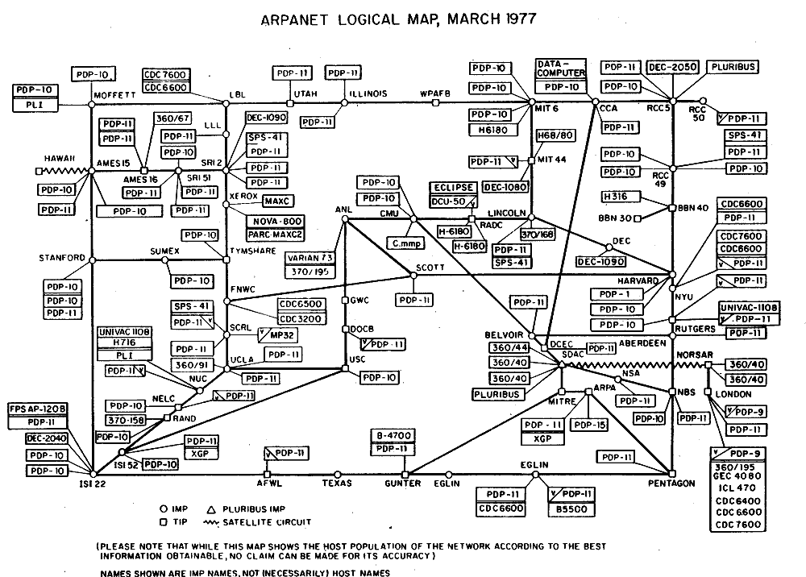

ARPAnet, the origin of the internet as a military tool.
In the year 1945, two things happened: World War 2 ended, and the term “Internet” was coined by the United States War Department. Although this term was originally meant to designate a network of radios, this term is now commonly used to refer to the World Wide Web, who didn’t come into existence until 1989 in the CERN (that’s us!).
The US department of Defense originally funded ARPANET, more bureaucratically known as the Advanced Research Projects Agency Network, served as a way to link files between different departments of the US government, and was the first network to implement the TCP/IP protocol suite. The first message sent over ARPANET was “LO”, which was meant to be “LOGIN”, but the system crashed after the first two letters were sent. The first successful message sent over ARPANET was “LOGIN”.
